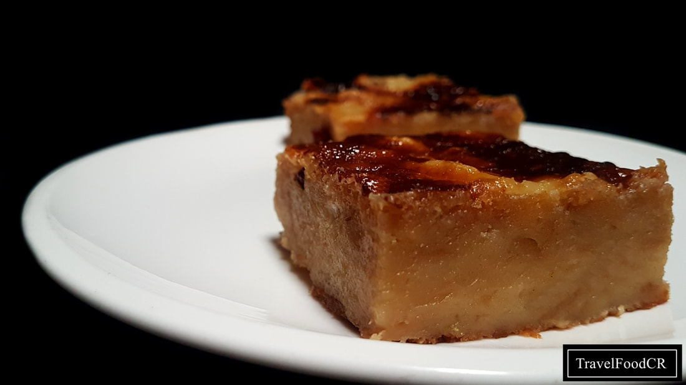

ROLLO DE CANELA
Esta receta de Rollos de canela, es bastante fácil de hacer y quedan exquisitos. Debo mencionar que lleva un frosting encima, o sea una especie de crema encima bien sólida y dulce, pero es opcional si desea usarla, pero entre nos, quedan más ricos aún con ese frosting, además toma un minuto hacerlo.

PASTEL DE FRESA
Este pastel o torta de fresas es una adaptación de la receta del pastel de manzana francés que me enseño la tía de mi esposo. Y exagero un poco al decir adaptación, ya que simplemente reemplacé las manzanas con fresas o frutillas – y le agregue un poco más de tiempo de hornear (debido a que las fresas naturalmente tienen más líquido que las manzanas).

BUDIN
El budín de pan también se conoce como torta de pan o pudin de pan en algunos países del centro y sur de América. Con esta receta tradicional te enseñaremos a utilizar el pan viejo que tienes en casa para preparar este rico postre. El budín de pan casero también tiene fama de ser un postre para gente mayor, y es que a los niños no suele gustarles mucho, pero este que aprenderás a hacer con esta receta fácil te sorprenderá por su sabor dulce y su textura suave. Te maravillará cómo esta torta de pan se vuelve la favorita de tu familia, incluso de los más pequeños. Por otro lado, este postre casero resulta una excelente opción para las fiestas de Navidad y Acción de Gracias. ¡Es fácil de preparar y, sobre todo, económico!